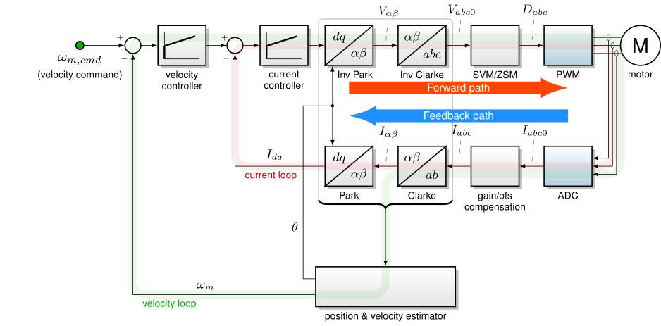
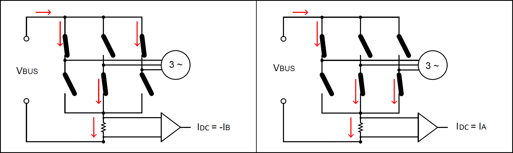
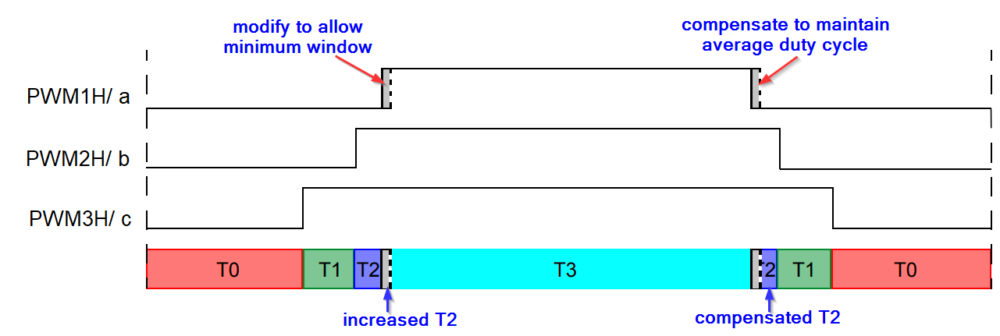

5.1.3. 电流测量¶
5.1.3.1. 概述¶
电流测量算法获取各个电流测量值（相电流、下桥臂晶体管电流或母线电流），并将其适配为磁场定向控制反馈通路中可用的量。该反馈处理步骤在 图 5.8。

图 5.8 简化 FOC 框图¶
电流测量包括以下几个方面：
运行时对电流偏置误差进行补偿
编译时对电流增益误差进行补偿，例如 MCLV-2
使用单/双/三通道电流测量
5.1.3.2. 增益与偏置补偿¶
电机驱动中不希望出现电流测量的增益和偏置误差，原因有几方面：它们会引起不希望的转矩脉动；电机驱动必须在工作电流上降额使用，以覆盖电流采样增益与偏置的不确定性，从而保证器件处于安全工作区之内。
参见 ADC 校准与补偿 以获取更多信息。
5.1.3.3. 电流测量通道¶
MCAF 在可使用的通道数（“分流电阻/shunt”）方面具有灵活性。小电流 [1] 电机控制通常使用放置在功率级下桥臂的分流电阻来检测电流，如 图 5.9。
在 双通道 和 三通道 测量中，相电流通过电流采样电阻 \(R_{sa}\)， \(R_{sb}\)、和 \(R_{sc}\)来检测。双通道需要两个电流采样通道，而三通道测量需要全部三个通道。
在某些情况下， 单通道 测量（“单分流电阻/single-shunt”）可以使用，此时一个电流采样电阻 \(R_{s,dc}\) 测量母线电流即可重建相电流。
图 5.9 三相桥中典型的电流采样电阻¶
5.1.3.3.1. 电流极性约定¶
MCAF 对电流极性采用如下约定，如 图 5.9。
相电流 \(I_a, I_b,\) 和 \(I_c\) 在电流从桥的输出端子流入电机时为正。
母线电流 \(I_{dc}\) 在电流从桥的正母线端子流入、从负母线端子流出时为正。
如 图 5.9所示，正的相电流对应于相分流电流的负值 \(I_{sa}, I_{sb}, I_{sc}\)。
5.1.3.3.2. 下桥臂分流电阻的有效性¶
如 图 5.9, 分流电阻 \(R_{sa}\) 测量电流 \(I_{sa}\)，等于 \(-I_a\) 只要下桥臂晶体管 QAL 已导通。
这有几个次要缺点：
下桥臂晶体管必须导通足够长时间以使任何暂态稳定下来，以便 ADC 能够获得良好的电流采样。（这通常不是大问题，特别是如果使用自举栅极驱动，其中下桥臂晶体管需要导通足够长时间以给自举电容充电。）
信号调理所需的信号带宽远大于相电流的有用带宽；通常至少 500 kHz，以使建立时间短且下桥臂晶体管导通时间可以较短。用于信号调理的运算放大器必须具有适当的增益带宽积（GBWP）来支持这一点，例如增益为 20 时需要 10 MHz GBWP，以达到 500 kHz 的信号带宽。
栅极充电电流流经分流电阻，因此在导通和关断期间，电流传感器上的电压会经历额外的尖峰
分流电阻上所需的电压占用了部分可用于导通下桥臂晶体管的电压。确保剩余的栅极电压足够，以保证在驱动器以其最高额定输出电流运行时下桥臂晶体管完全导通——这也是最需要晶体管完全导通的时候。
5.1.3.3.3. 三通道电流测量¶
当测量全部三相电流时，信噪比达到最大。这还增加了一定的冗余： \(I_{sa} + I_{sb} + I_{sc}\) 在所有下桥臂开关都导通时应接近零。
建议在对噪声最敏感的应用中使用此配置。
此时使用完整的 3×2 Clarke 变换 。
5.1.3.3.4. 双通道电流测量¶
在假设 \(I_{sa} + I_{sb} + I_{sc} = 0\)的前提下，两个相电流足以重建第三个相电流。这确实放弃了冗余，且总体噪声水平会升高。
此时使用降阶的 2×2 Clarke 变换 。
在双通道测量中，电流采样通道之间的增益误差会表现为被直接采样那一相的交叉耦合效应；假设 \(I_{sa}\) 为 10 A， \(I_{sb}\) 为 -10 A， \(I_{sc}\) 为零，但 A 相增益为 +5%、B 相增益为 -5%、C 相未测量。则检测到的电流值为 10.5 A、-9.5 A 和 -1 A。
5.1.3.3.5. 单通道电流测量¶
单通道电流算法通过测量母线电流来重建三相电流。借助开关状态和母线电流，可以重建三相电机电流，如 图 5.10所示。根据开关状态，上桥臂晶体管或下桥臂晶体管中必须只有某一相的一个晶体管导通，从而可由母线电流估计该相电流。

图 5.10 电流重建示例：左图： \(I_B = -I_{DC}\) （母线电流从电机流出并流过 B 相下桥臂）。右图： \(I_A = I_{DC}\) （母线电流流过 A 相上桥臂并流入电机）。¶
如果在单通道方式下重建相电流时不调整占空比，零序调制（ZSM）的输出可能导致三相电流畸变，从而给 FOC 的执行带来挑战。这发生在低调制指数区域以及中高调制指数区域的部分区段，因为在这些区域单分流电阻可用于采样电流的时间较少。
通过调整 ZSM 输出以满足最小时间窗口要求可解决此问题，从而获得更好的（正弦的）电流信息。这里我们需要确保每个有效矢量有足够的时间通过单通道采样电流。为此，我们将有效矢量与一个最小时间窗口 \(t_{\rm sample}\)进行比较，并在需要时进行补偿。该 最小时间窗口 可在 motorBench® Development Suite 的 定制（Customize）页面中调整。
在下方 图 5.11所示的使用场景中，时间窗口 T2 不足以通过单通道采样电流。为了给电流测量留出最小时间窗口，我们对该时间进行修改：增大有效矢量时间 T2 以满足最小时间窗口，并在下降沿（PWM 周期的后半段）进行相应补偿。
如果有效矢量时间 T2 已足够宽，使电流测量有效且准确，则无需此调整。

图 5.11 占空比时间 T2 的调整¶
当在 PWM 周期的前半段修改输出（占空比）时，也会在 PWM 周期后半段的下降沿进行补偿，以确保平均电压矢量（占空比）保持不变。
在栅极驱动器传播延迟和运放压摆率导致的延迟较大的某些板卡上，ADC 触发延迟 \(t_{\rm delay}\) 需要调整以满足延迟要求。该 ADC 触发延迟 可在 motorBench® Development Suite 的 定制（Customize）页面中调整。
关于 FOC 中基于单通道的电流重建实现细节的更多信息，请参见 Microchip 的应用笔记 AN1299。
5.1.3.3.6. Microchip 开发板支持¶
motorBench 支持的 Microchip 电机控制开发板如下表所列，并标注了电流极性（ADC 所见）：绿色加号表示正极性，蓝色减号表示负极性。空白单元格表示未检测相应的电流输入。
开发板 |
\(I_a\) |
\(I_b\) |
\(I_c\) |
\(I_{dc}\) |
说明 |
|---|---|---|---|---|---|
5.1.3.3.7. 实现说明¶
支持历史：
通道数 |
单 |
双 |
三 |
说明 |
|---|---|---|---|---|
MCAF R1 – R6 |
|
双通道仅包含 A 相和 B 相。 |
||
MCAF R7 |
|
|
|
双通道仅包含 A 相和 B 相。 |